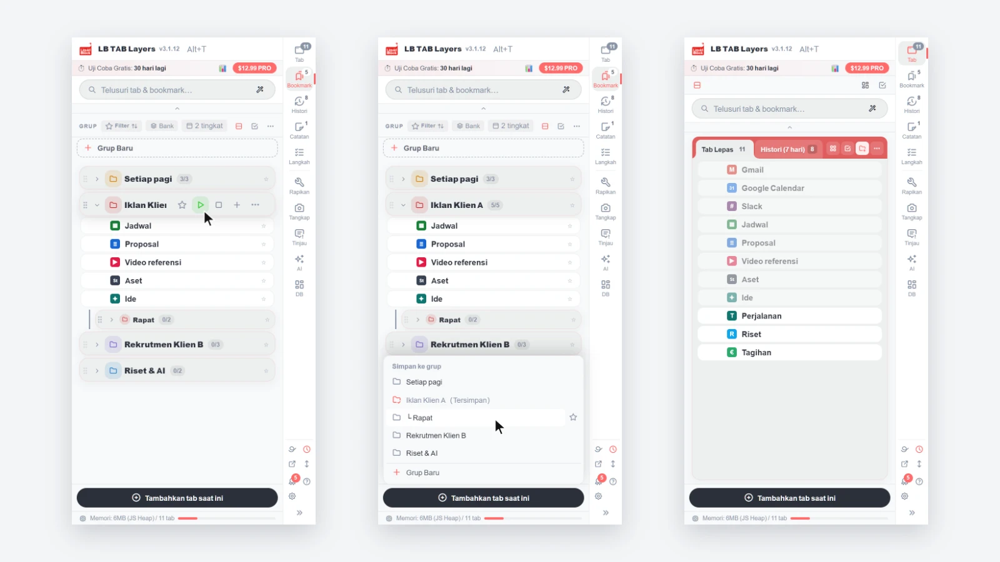
Tekan Alt+T (Option+T di Mac) untuk membuka LB TAB Layers. Di awal, Anda hanya perlu mengingat tiga hal: simpan tab yang sedang Anda buka dengan Tambahkan tab saat ini, buka seluruh isi grup dengan ▶, lalu tutup lagi dengan ■. Semua yang Anda simpan tersimpan sebagai bookmark Chrome, jadi tetap ada meskipun tab ditutup atau Chrome dimulai ulang.
Terima kasih telah menginstal LB TAB Layers. Halaman ini hanya berisi hal yang Anda perlukan dalam lima menit pertama.
Idenya sederhana. Tab adalah “sekarang”: apa yang sedang Anda kerjakan. Bookmark adalah “nanti”: apa yang akan Anda buka lagi. Histori hari ini adalah “jejak” dari apa saja yang sudah Anda lihat. Di LB TAB Layers, Anda berpindah di antara ketiganya dalam satu panel samping.
💡 Tekan Alt+T (Option+T di Mac) untuk membukanya kapan saja. Anda juga dapat mengklik ikon LB TAB Layers di bilah alat Chrome. Jika ikonnya tidak terlihat, klik ikon potongan puzzle, lalu sematkan LB TAB Layers.
Pertama: mulai dengan menyalin bookmark yang sudah ada (disarankan)
Jika Anda sudah punya bookmark di Chrome, menyalinnya ke TAB Layers lebih dulu adalah cara tercepat untuk memulai. Bookmark asli Anda tidak dipindahkan, jadi tidak ada yang hilang.
Klik “Mulai dari bookmark Anda (disarankan)”
Tombol ini ada paling atas di layar selamat datang yang muncul tepat setelah Anda menginstal.
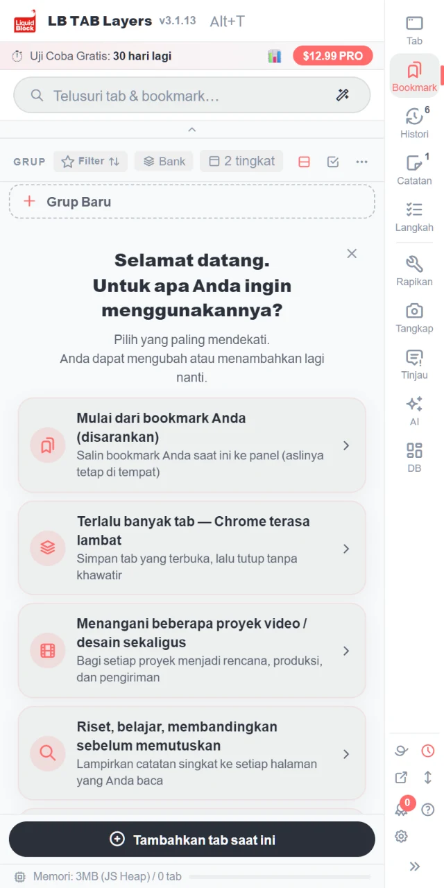
Klik “OK” untuk menyalinnya
Anda akan melihat berapa banyak bookmark yang akan disalin. Bookmark asli Anda tetap di tempatnya dan tidak diubah sama sekali. Meskipun bookmark Anda banyak, prosesnya hanya beberapa detik.
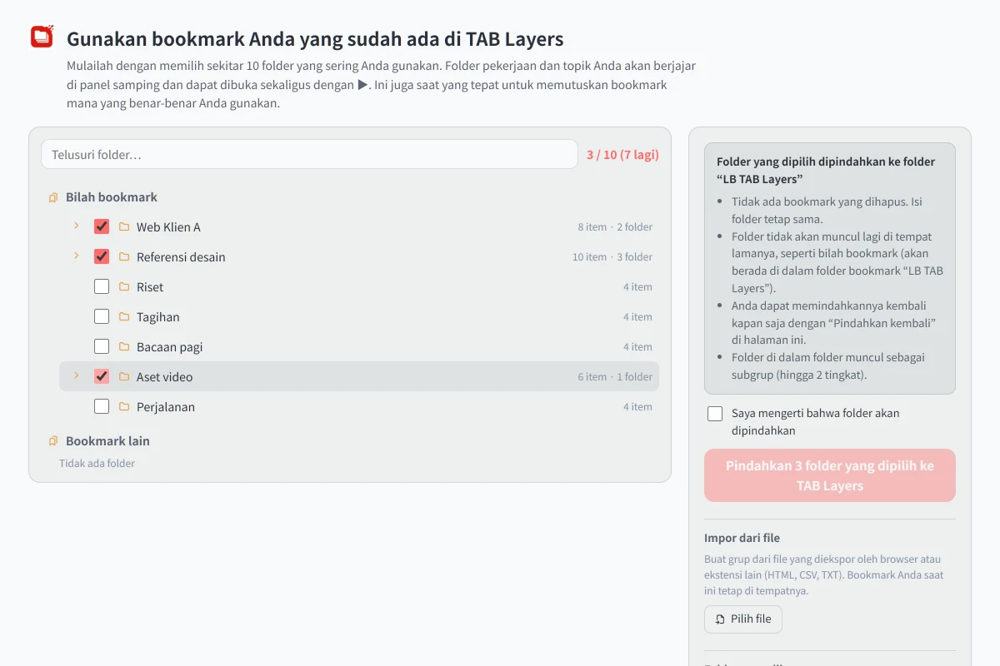
Pindahkan satu halaman yang sering dipakai ke “Proyek pertama saya”
Salinannya dikumpulkan di tempat penampungan bernama “Bookmark saat ini (disalin tanggal)”, dan setiap folder menjadi subgrup. Klik “→ Proyek pertama saya” di ujung kanan baris halaman yang sering Anda pakai, dan halaman itu akan pindah ke sana. Tempat penampungan ini tidak dihitung dalam batas 5 grup versi gratis.
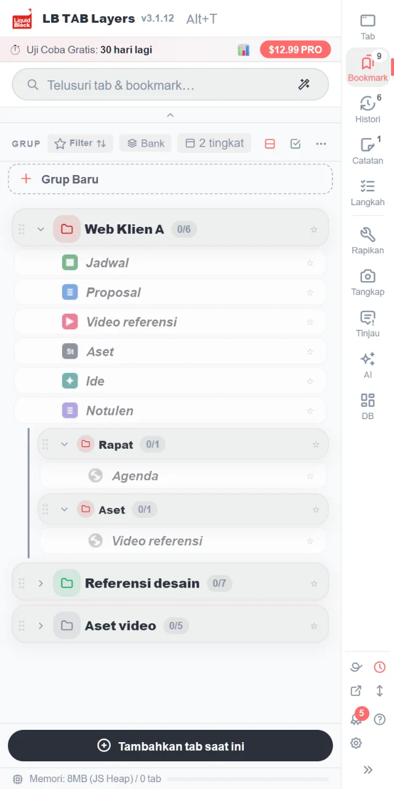
Lalu buka dengan ▶ dan tutup dengan ■
Kartu “3 langkah pertama Anda” di bagian atas memandu langkah berikutnya satu per satu. Jika bookmark Anda 200 atau lebih, kartu ini juga menyarankan untuk memilahnya di layar besar (dasbor).
💡 Anda juga dapat memilih folder dan memindahkannya apa adanya sebagai grup. Buka dari Setelan → Data → Bookmark, atau lewat “Impor bookmark” di bagian atas dasbor layar penuh. File yang diekspor dari browser atau ekstensi lain (HTML, CSV, TXT) juga dapat dimasukkan dari sana. Setelah Anda terbiasa dengan TAB Layers, Anda juga akan ditawari untuk merapikan bookmark asli ke dalam satu folder (tidak ada yang dihapus, dan Anda dapat membatalkannya kapan saja).
Jika panel samping mengganggu: “Overlay” di atas halaman
Panel samping berada di sebelah halaman, sehingga di layar kecil halamannya jadi lebih sempit. Dalam situasi itu, beralihlah ke “Overlay”, yang menampilkan panel di atas halaman. Biasanya hanya ada “+” kecil di tepi halaman, dan panel baru terbuka saat Anda membutuhkannya.
Pilih “Overlay” di “Setelan” › “Perilaku” › “Mode tampilan”
Buka Setelan dari ikon roda gigi di paling bawah kolom sebelah kanan. Di sini Anda juga dapat memilih “Posisi Overlay” (kiri atau kanan), “Lebar Overlay”, “Posisi Tombol”, dan “Tampilan Saat Memulai” (misalnya “Intip”).
Tutup panel samping
Tekan Alt+T, atau klik × di kanan atas panel. Jika “+” tidak muncul di halaman yang sudah terbuka sebelumnya, muat ulang halaman itu.
Arahkan kursor ke “+” di tepi halaman
Panel bergeser masuk di atas halaman. Gerakkan kursor kembali ke halaman, dan panel akan tertutup.
Overlay mencakup fungsi-fungsi dasar. Anda dapat mengelola tab dan bookmark (menyimpan, membuka dengan ▶, menutup dengan ■, menelusuri), serta memakai “Catatan” dan “Langkah”. Catatan tinjauan untuk video dan halaman (“Tinjau”) digunakan di panel samping — tekan Alt+T untuk membukanya saat Anda memerlukannya. Overlay adalah fitur PRO (dapat digunakan selama uji coba gratis 30 hari).
💡 Panel juga dapat dibuka di luar panel samping. Dari “Cara Tampilan” di bagian bawah kolom sebelah kanan, buka panel di tab baru atau di jendela mandiri. Di laptop, satu tab memberi Anda ruang yang luas; dengan dua monitor, Anda dapat menaruh jendela mandiri di layar yang lain.
1. Mengenal tampilannya
Di tepi panel ada deretan tombol yang tersusun ke bawah: Tab, Bookmark, Histori, Catatan, dan Langkah. Klik salah satunya untuk berpindah ke tampilan itu. Angka kecilnya menunjukkan, misalnya, berapa tab yang sedang terbuka dan berapa grup yang Anda miliki.
- Tab — tab yang sedang terbuka dan belum disimpan di mana pun
- Bookmark — tab yang sudah Anda simpan, dikumpulkan dalam grup, satu grup untuk satu proyek
- Histori — halaman yang Anda kunjungi hari ini, termasuk yang tidak Anda simpan
- Catatan dan Langkah — catatan untuk pekerjaan Anda dan daftar periksa yang dikerjakan langkah demi langkah
Di bawah garis pemisah ada alat-alat lain. Pada hari pertama, Anda belum memerlukannya.
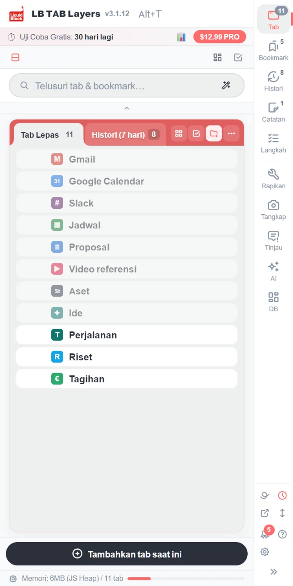
2. Dasar-dasarnya
Buat grup
Di tampilan Bookmark, klik + Grup Baru di bagian atas daftar. Beri nama sesuai pekerjaannya, misalnya “Web Klien C” atau “Setiap pagi”. Yang paling enak dipakai: satu grup untuk satu proyek.
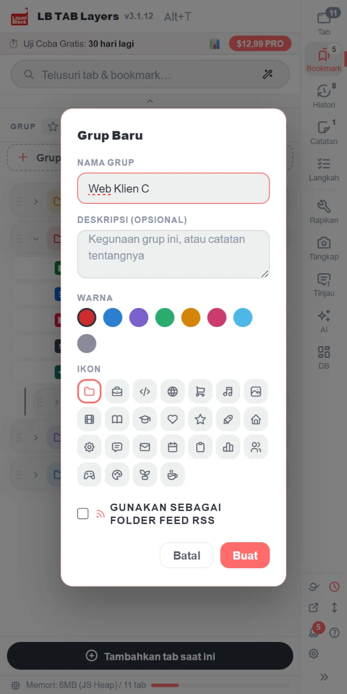
Simpan tab yang sedang Anda buka
Klik Tambahkan tab saat ini di bagian bawah panel, lalu pilih grup. Grup yang sudah berisi halaman itu ditandai Tersimpan.
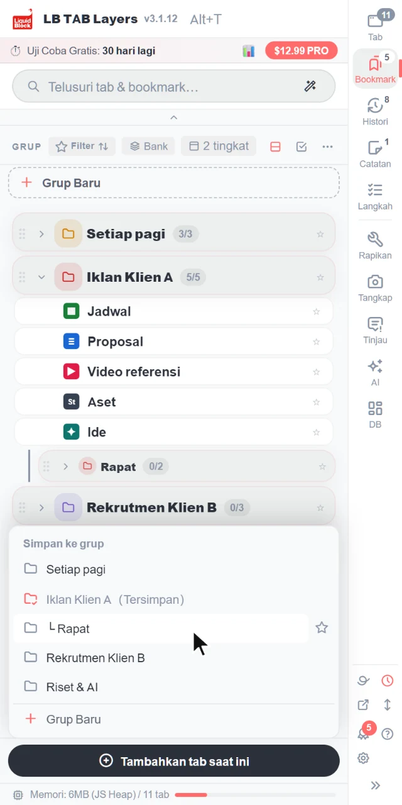
Simpan beberapa tab yang terbuka sekaligus
Di tampilan Tab, klik lingkaran di sebelah kiri sebuah tab untuk mulai memilih. Klik lingkaran pada tab lain yang ingin Anda simpan, lalu klik Ke grup di bagian bawah dan pilih grup. Anda juga dapat menyeret tab satu per satu ke sebuah grup.
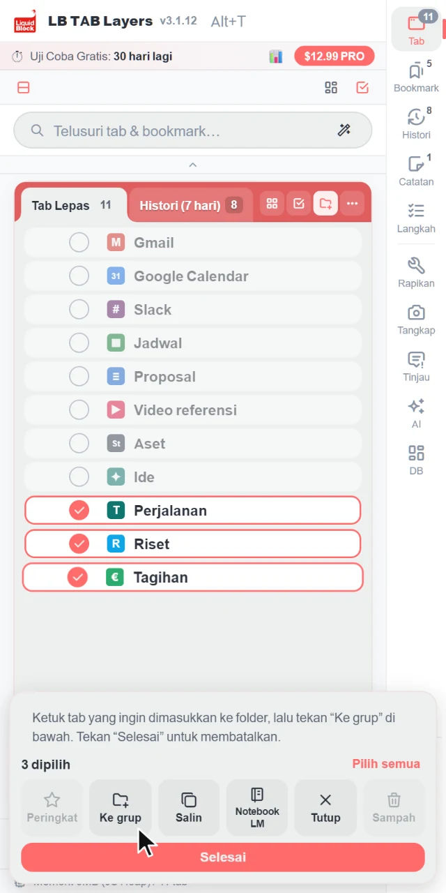
Buka semuanya dengan ▶, tutup semuanya dengan ■
Arahkan kursor ke sebuah grup, lalu klik ▶ untuk membuka semua tabnya. Tab-tab itu terbuka bersama sebagai grup tab Chrome dengan nama dan warna yang sama seperti grup Anda. Setelah selesai, klik ■ untuk menutup grup tab itu sekaligus. Tab yang Anda simpan tetap tersimpan.
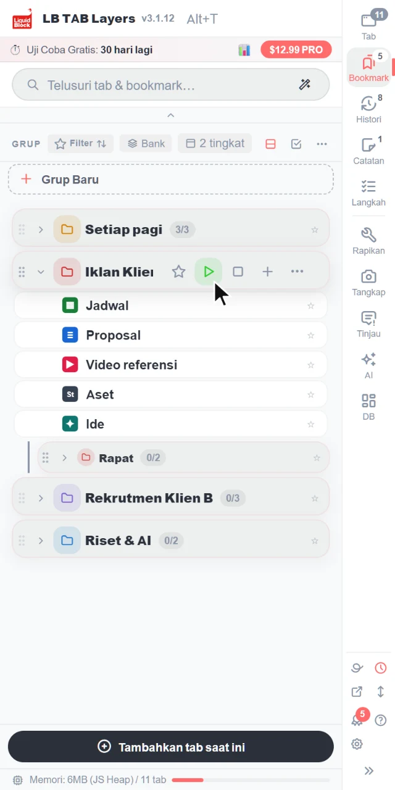
Telusuri
Ketik di kotak penelusuran di bagian atas untuk mencari sekaligus di tab yang terbuka, tab yang tersimpan, dan histori hari ini. Salah ketik sedikit tidak masalah.
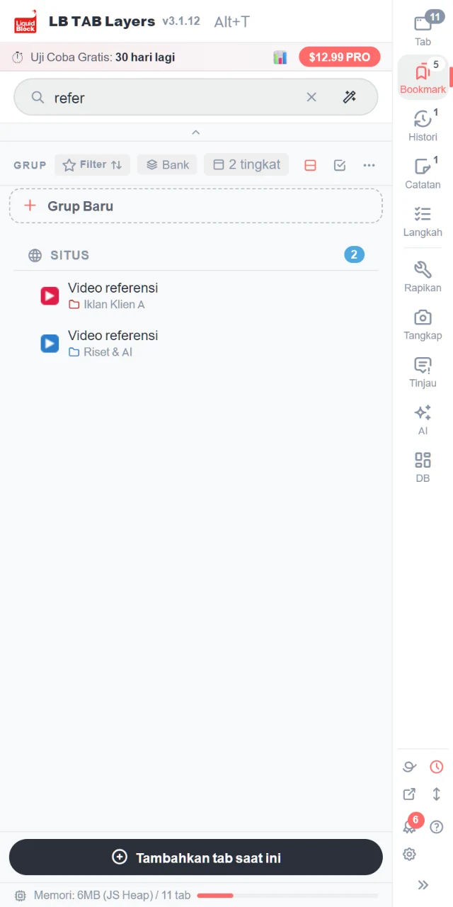
3. Cara sederhana mengatur pekerjaan Anda
Satu grup untuk satu proyek
Anggap sebuah grup sebagai meja kerja untuk satu pekerjaan. Sepanjang hari, Anda cukup melakukan ini:
- Pagi hari — klik ▶ pada proyek hari ini dan lanjutkan dari titik terakhir Anda
- Saat berganti pekerjaan — tutup proyek yang sedang dikerjakan dengan ■, lalu buka proyek berikutnya dengan ▶
- Di akhir hari — cukup klik ■. Besok, ▶ membuka semuanya kembali
Situs yang dipakai setiap hari, taruh di bilah pin
Untuk situs yang Anda buka setiap hari, seperti email atau kalender, klik kanan sebuah tab atau bookmark, lalu pilih Tambahkan ke bilah pin. Situs itu tampil sebagai ikon kecil di bagian atas panel dan terbuka dengan satu klik (maksimal 12). Anda juga dapat menyeretnya ke sana.
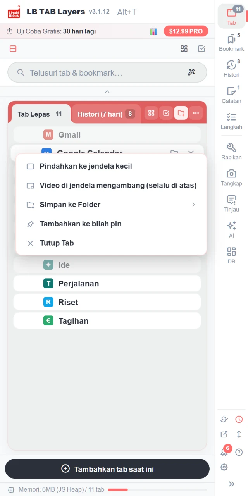
Satu jendela untuk tiap proyek
Klik kanan sebuah grup, lalu pilih Buka di jendela baru untuk membukanya sebagai grup tab di jendela terpisah. Ini berguna saat Anda mengerjakan dua hal berdampingan atau memakai monitor kedua.
Lupa menyimpan sesuatu? Ada di histori hari ini
Anda tidak perlu menyimpan semuanya. Halaman yang tidak Anda simpan tetap ada di Histori, sesuai urutan Anda mengunjunginya hari ini. Simpan yang penting ke grup dan tutup sisanya; biasanya itu sudah cukup.
🔒 Semua yang Anda simpan tersimpan sebagai bookmark Chrome. Tab yang tersimpan tetap ada meskipun Anda menutupnya atau memulai ulang Chrome, dan LB TAB Layers tidak mengirim bookmark Anda ke mana pun. Data yang berada di dalam ekstensi, seperti catatan, dapat diekspor dari Setelan.
Sepuluh tindakan lainnya dapat Anda lihat di panduan (dalam bahasa Inggris).
Pertanyaan yang sering diajukan
Q. Bagaimana cara membuka LB TAB Layers?
Tekan Alt+T di keyboard (Option+T di Mac). Anda juga dapat mengklik ikon LB TAB Layers di bilah alat Chrome.
Q. Jika saya menghapus ekstensi ini, apakah tab yang saya simpan ikut hilang?
Tidak. Tab yang tersimpan tetap ada di bookmark Chrome Anda, dalam folder dengan nama yang sama seperti grup Anda. Data yang berada di dalam ekstensi, seperti catatan, ikut terhapus, jadi ekspor dulu dari Setelan.
Q. Apa saja yang dicari oleh kotak penelusuran?
Tab yang sedang terbuka, tab yang tersimpan di grup Anda, dan histori hari ini, semuanya sekaligus.
Q. Apakah gratis?
Ya. Di versi gratis, Anda dapat membuat hingga 5 grup. Histori hari ini, Langkah, dasbor, dan penelusuran AI adalah fitur PRO, dan semua fitur dapat digunakan selama 30 hari setelah Anda menginstal.
Mulailah dengan satu proyek.
Buka dengan Alt+T, simpan tab yang sedang Anda buka, buka dengan ▶, dan tutup dengan ■. Tanpa akun · Tersimpan sebagai bookmark Chrome · Semua fitur gratis selama 30 hari
Tambahkan ke Chrome — gratis →